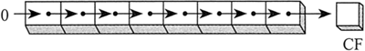

首页 > 编程笔记
汇编语言SHR（右移）指令：将操作数逻辑右移一位
SHR（右移）指令使目的操作数逻辑右移一位，最高位用 0 填充。最低位复制到进位标志位，而进位标志位中原来的数值被丢弃：
SHR 与《SHL指令》一节中介绍的 SHL 的指令格式相同。在下面的例子中，AL 中的最低位 0 被复制到进位标志位，而 AL 中的最高位用 0 填充：

SHR 与《SHL指令》一节中介绍的 SHL 的指令格式相同。在下面的例子中，AL 中的最低位 0 被复制到进位标志位，而 AL 中的最高位用 0 填充：
mov al, 0D0h ; AL = 11010000b
shr al, 1 ; AL = 01101000b, CF = 0
mov al, 00000010b
shr al, 2 ; AL = 00000000b, CF = 1
位元除法
数值进行右移（向 LSB 移动）即执行了位元除法（Bitwise Division）。将一个无符号数右移 n 位，即将该数除以 2n。下述语句将 32 除以 2¹，结果为 16：
mov dl, 32 ;移动前：00100000 = 32
shr dl, 1 ;移动后：00010000 = 16
mov al, 01000000b ;AL = 64
shr al, 3 ;除以 8, AL = 00001000b
关注公众号「站长严长生」，在手机上阅读所有教程，随时随地都能学习。内含一款搜索神器，免费下载全网书籍和视频。

微信扫码关注公众号